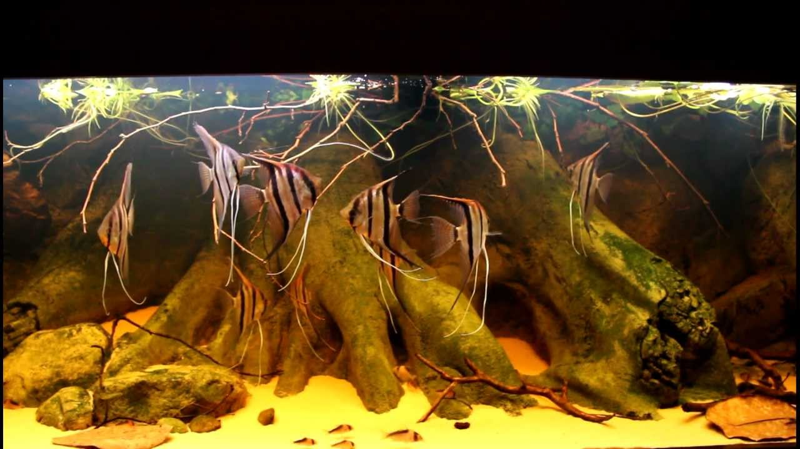

Pterophyllum is a small genus of freshwater fish from the family Cichlidae known to most aquarists as angelfish. All Pterophyllum species originate from the Amazon Basin, Orinoco Basin and various rivers in the Guiana Shield in tropical South America. The three species of Pterophyllum are unusually shaped for cichlids being greatly laterally compressed, with round bodies and elongated triangular dorsal and anal fins. This body shape allows them to hide among roots and plants, often on a vertical surface. Naturally occurring angelfish are frequently striped longitudinally, colouration which provides additional camouflage. Angelfish are ambush predators and prey on small fish and macroinvertebrates. All Pterophyllum species form monogamous pairs. Eggs are generally laid on a submerged log or a flattened leaf. As is the case for other cichlids, brood care is highly developed. Pterophyllum should not be confused with marine angelfish, perciform fish found on shallow ocean reefs.
Pterophyllum is a small genus of freshwater fish from the family Cichlidae known to most aquarists as angelfish. All Pterophyllum species originate from the Amazon Basin, Orinoco Basin and various rivers in the Guiana Shield in tropical South America. The three species of Pterophyllum are unusually shaped for cichlids being greatly laterally compressed, with round bodies and elongated triangular dorsal and anal fins. This body shape allows them to hide among roots and plants, often on a vertical surface. Naturally occurring angelfish are frequently striped longitudinally, colouration which provides additional camouflage. Angelfish are ambush predators and prey on small fish and macroinvertebrates. All Pterophyllum species form monogamous pairs. Eggs are generally laid on a submerged log or a flattened leaf. As is the case for other cichlids, brood care is highly developed. Pterophyllum should not be confused with marine angelfish, perciform fish found on shallow ocean reefs.
Book Recomondation: Bleher's Biotope By Heiko Bleher
Expeditions to Aquatic Habitats, Aquatic Biotopes in nature, and How to do in Aquaria The book has 460 pages and thousands of photos; it includes the description of about 50 countries and the status of their aquatic environment today, including detailed description of 500plus rivers and lakes with approximately 2500 fish species mentioned and shown (with many new ones), and nearly 500 different aquatic plant names. Bleher mentions also the taxonomic problem of some names and gives GPS data on almost all biotope locations, the years of visit and when he discovered the species and/or introduced it. This book contains histories and field records of nearly half of Heiko Bleher’s 910 filed trips, shows the worldwide destruction of aquatic habitats – past and present – and records many species extinct in nature because of mans endless pollution, damming, destroying the basis of all life forms: The freshwaters. This book is a timeless document for todays and for future generations; a definite must for anyone who wants to know about aquatic nature past and present. Pages 460 – ISBN 9788890973628
This biotope by Heiko Bleher shows a version of the Rio Nhamundá while the water is going down in a small bay in the lower river portion. There is white sand, driftwood and some aquatic vegetation, like large Echinodorus, Cabomba, Myriophyllum and Nympheae species. The Heckel Discus are the same specimens Heiko Bleher has placed into the authentic biotope decoration he did for a Rio Nhamundá river edge biotope at the 13th Zierfische & Aquarium 10 days earlier. The other fishes placed were Hemigrammus bleheri, which did immediately beautiful form schools, the angelfishes did perfect with the discus community and also Otocinclus species …
HERE YOU CAN SEE THE BEAUTIFUL NATURAL HABITAT OF PTEROPHYLLUM